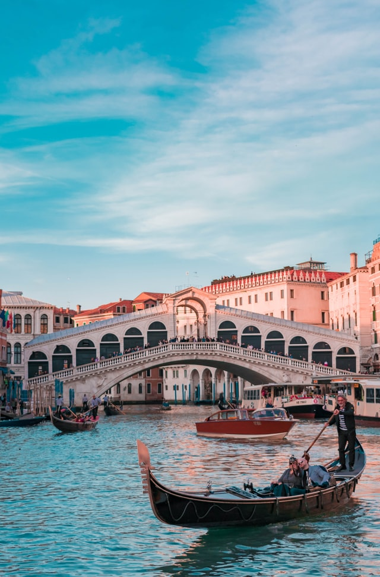

We are Rodić Davidson Architects, a London and Cambridge based design studio with a belief that buildings are more than brick and mortar; they are an extension of ourselves and our environment, places where we can flourish and develop. This belief underpins everything we do, whether we are designing for high end residential, commercial or development, we always create bespoke and sustainable designs. Our practice specialises in design-led refurbishments and highly crafted new builds, with an expanding portfolio of work across London and beyond. The team’s design approach is guided by an expertise in central London planning policy and historic buildings.
Read more about our expertise here including Heritage and Listed Buildings, New Builds and Farmhouses.
Read more about our expertise here including Heritage and Listed Buildings, New Builds and Farmhouses.
